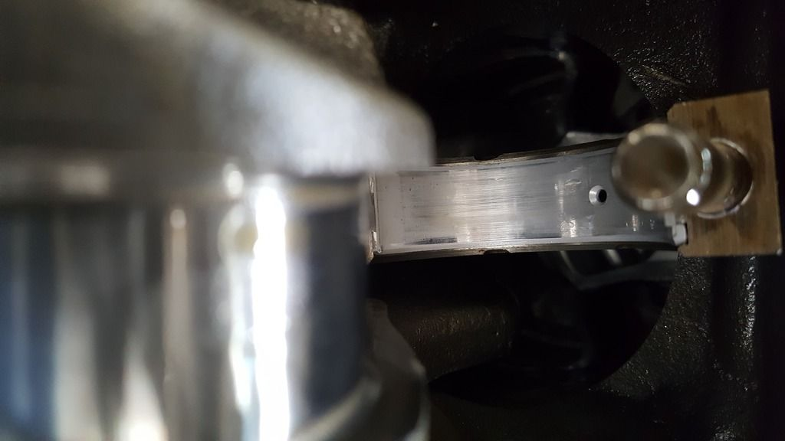

-
Thanks NissanEgg!Shelly - 93 Pathfinder
VG33 conversion in progress
4x4 conversion complete
-
new oil pump, no question. pack that bitch full of moly lube too -
you can change all the bearings with the motor in the car. cross member will have to be removed, as will the oil pan obv. take all the drive belts off. support the front of the crank with a screw jack. take down the main bearing girdle, and use a small screw driver to push the bearing out of the upper journal. slide the new one in, making sure the notch is correct. same thing with the rod bearings.Ride it like you stole it…
1986 300zx NA2T - CM 3" turbo back, Pathy 3.0 Engine, Custom cold air intake, 255lph Walboro, T3 turbo, 90 shot of nitrous, 30A trans, 88t LSD, Poly everywhere, SS brakelines. 288whp 336wtq
2001 YZF600 - Sold for Nitrous and Exhaust Upgrade…
1993 Toyota Corolla - The invincible daily driver, off to greener pastures.
2002 Nissan Maxima SE - New daily driver -
I fugged up.
Well Things just get worse as I tear apart more. I inspected the bearings for 3-6. I didn't have time to check 1-2. I'll do that tomorrow and pull the girdle off to inspect the mains.
The bearings on #6 is the worse so far. When I pulled the bearing cap, it just feels out. Same with its opposite end.
So is it salvageable? Tips to try and save it? the rods are 0.25 undersized and the crank is 0.50 undersized.
It looks like the chamfer for the oil holes are digging into the bearings on the journals.
The only decent one of the 4 I checked. This is number 4 too oddly.
Last edited by cuong nguyen; 02-28-2017, 11:16 PM.Shelly - 93 Pathfinder
VG33 conversion in progress
4x4 conversion complete
-
I believe there are service limits in the "EM" section of the FSM for connecting rod and crankshaft reworking limits. -
I'm aware of that. I'm going to try to see if I can get to the mains before I go any further. I'm trying to avoid having to pull the motor and transmission out again.Originally posted by NissanXRMA View PostShelly - 93 Pathfinder
VG33 conversion in progress
4x4 conversion complete
-
Pulled the girdle off today but forgot to check 1 and 2 rod bearings.
Shelly - 93 Pathfinder
VG33 conversion in progress
4x4 conversion complete
-
From lack of oil pressure I'd say. You might have a chance if you get a new oil pump and new bearings? But the crank will have scores on the journals so hard to say what will happen really.Straya, +61 -
Damn. Looks rough. Looks like you spun metal all over the place. Your cylinders are probably scored as well. You might be able to just polish the crank and hopefully hone the cylinders.
Try to get pick of the cylinder walls.
Worse case scenario is a new block and cut the crank again etc.
At this point only a machine shop will be able to tell you for sure. Hard to diag from the key board.
IDK what your goals or budget are but keep us posted.
Best of Luck -
I think the block is OK. Can't see the bores until I pull the crank out. I only get less than an hour each day to mess with the motor and I'm trying to get a lot done before the baby comes.
I checked rod 1 and 2 bearings. 2 shows oil starvation and looks actually decent.

Rod 2 bearings
I am thinking if I polish the journals, I should be ok. Any significant nicks should just hold oil as the polishing should get rid of the high peaks to keep it from chewing through the bearings.Shelly - 93 Pathfinder
VG33 conversion in progress
4x4 conversion complete
-
Something similar happened to me. I let my Z sit for 15 years and the turbo bearings disintegrated and fell into the oil pan. I spun metal everywhere and the oil pan looked like yours. The engine was fully built so I tried to save as much as I could but I ended up with new bored block and cut crank. The camshafts had to be polished.
Congrats on the baby but it might be better to deal with this now than when the kid is crawling around, shiting, puking, sneezing, coughing etc. LOL -
Fugggg. That does not sound good for me. Haha. How severe did the bores and camshafts look? My bores are +0.75.Originally posted by ralph50 View Post
I'D be at max available undersized bearings and rods if I re-grind the crank.
I've got too much money in this thing to throw away lol.Shelly - 93 Pathfinder
VG33 conversion in progress
4x4 conversion complete
-
The cylinder walls on my block were too scratched up so I needed a new block. I have Wiseco 30 over pistons. My crank had to be cut 50 under. It was lot of $ when all was said and done but I think/hope I did it the right way.
I was able to save the pistons, rods, heads, cams and crank. The only reason I did so was because it was balanced, ported and all after market.
As a rule of thumb if you can feel it with your finger its too much.
Don't mean to freak you out but at the very least inspect it.
I had less metal in the pan than you -
Ffffffffffffff.Shelly - 93 Pathfinder
VG33 conversion in progress
4x4 conversion complete
-
It looks like my oil pump was the main culprit.
The screws for the back plate took no effort to come off. Opening up, I could see the backing and the gears were cutting grooves.
Shelly - 93 Pathfinder
VG33 conversion in progress
4x4 conversion complete

Copyright © 2006–. All rights reserved. Privacy Policy